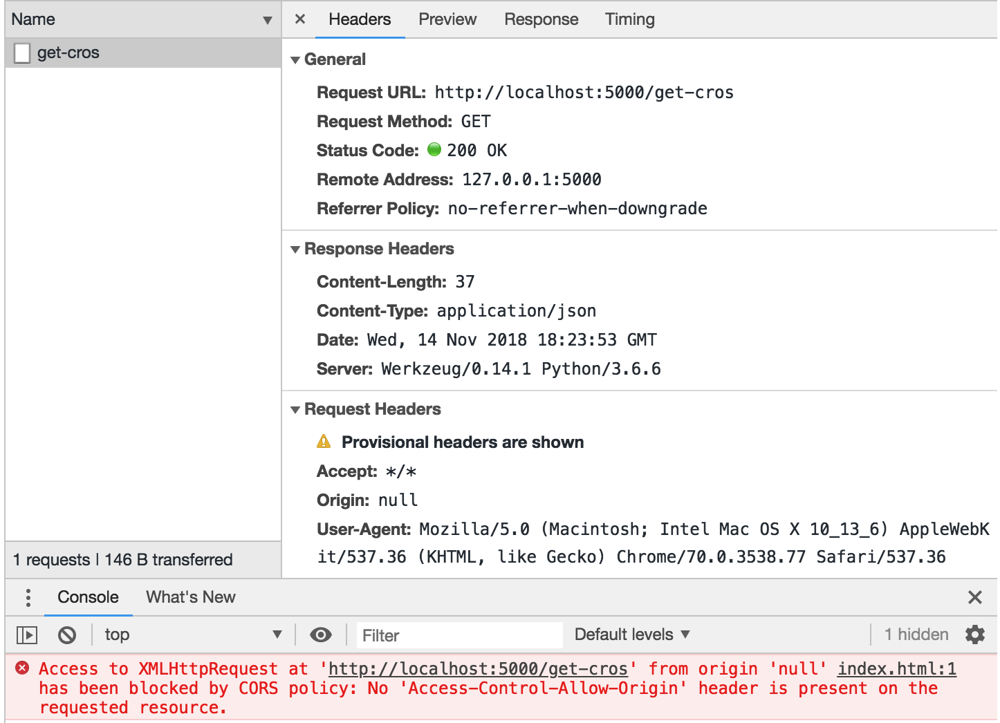

跨域问题及解决方案
一、跨域问题
1.何为跨域
域的概念由两部分组成：域名和端口。当两个域的域名和端口相同时，即同域，否则为不同域。跨域请求主要是指，浏览器获取了来自域A的资源，这些资源又发起了对域B的请求。
2.浏览器对跨域的限制
出于安全原因考虑，浏览器对跨域请求做了一些限制: 来自域A的脚本发起了对域B的请求，需要进行跨域校验。当跨域校验成功时，脚本才能正确的获取到对应的数据，需要注意这里存在两种可能的阻止脚本请求域B数据的策略:
- 请求直接没有发出，脚本无法获取数据。
- 请求已经发出，并拿到响应，但是浏览器禁止脚本拿到响应数据。(chrome使用的该策略)
很明显，跨域限制并不存在于http请求本身，而是浏览器的跨域校验，并且只是对脚本发起的http请求进行了限制。也就是说对于<img>和<script>等标签而言，是允许不做任何安全校验，而进行跨域访问的，这也是后面JSONP的跨域解决方案可以得以实施的原因。跨域校验失败的时候，脚本是无法获取到失败原因的，只能显示打开控制台观察，这是为了避免脚本获取失败原因，进而自动更新脚本，发起正确的请求。下图显示了由脚本发起的GET请求的跨域校验失败:

二、CORS解决方案
CORS即跨域共享标准(Cross-Origin Sharing Standard)，Web浏览器通过制定一套协议来提供对CORS的支持。这个协议主要是在请求和响应中添加适当的Headers，这些特殊的Headers标明了哪种HTTP请求的响应允许脚本去获取数据。CORS有两种请求:简单请求和预检请求, 其中预检请求会先发送OPTIONS请求，检查服务器是否对紧接着的数据请求支持。简单请求和预检请求都是由Web浏览器自动根据实际的数据请求进行选择并发起。
1.简单请求
简单请求是相对于预检请求而言的，简单请求会直接发送HTTP请求，浏览器根据响应的CORS-HEADERS，判断脚本是否有权限获取数据。当请求满足以下几个条件时，属于简单请求:
- 使用下列方法之一:
- GET
- HEAD
- POST
- 只使用了CORS安全HEADERS集合:
- Accept
- Accept-Language
- Content-Language
- Content-Type(在一些特殊的取值为简单请求，其他的取值为预检请求)
- Content-Type为下列3者之一:
- text/plain
- multipart/form-data
- application/x-www-form-urlencoded